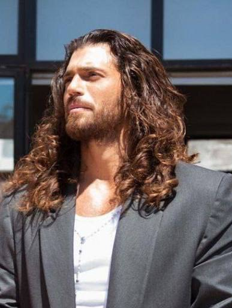

From a law office in Istanbul to the biggest stages in Italy and Spain, Can Yaman has built one of the most unusual careers in European television — and he did it without starting out as an actor at all.

| Full name | Can Yaman |
| Born | 8 November 1989, Istanbul, Turkey |
| Age | 36 years old (in 2026) |
| Height | 1.88 m (6 ft 2 in) — as listed in his biographies |
| Nationality | Turkish |
| Profession | Actor, model, qualified lawyer |
| Education | Law degree, Yeditepe University (2012) |
| Languages | Turkish, Italian, English, German, Spanish |
| Best known for | Erkenci Kuş (Daydreamer), Viola come il mare, Sandokan |
| Net worth | Estimated at $8 million – $25 million (see the net worth section below — no audited figure exists) |
| Marital status | Not married (as of 2026) |
Can Yaman is a Turkish actor, model and qualified lawyer who became one of the most famous Turkish stars in Europe. He is best known around the world as Can Divit, the free-spirited photographer in the romantic comedy Erkenci Kuş (known in English as Daydreamer), and more recently as the hero of the international adventure series Sandokan.
What makes his story different from most celebrity biographies is the order of events. Yaman did not grow up dreaming of a stage career. He studied law, worked in corporate law, and only then turned to acting — first in Turkey, and later in Italy, where he rebuilt his career in a second language and became a household name there too. In 2026 he added a third country to that journey, filming his first series in Spain, in Spanish.
Can Yaman was born on 8 November 1989 in Istanbul, Turkey, which makes him 36 years old in 2026. He grew up in the city as the only child of a lawyer father and a teacher mother, with Albanian roots on his father's side.
His schooling already pointed toward Italy. After Bilfen College, he attended the Liceo Italiano di Istanbul — the Italian High School in Istanbul — where he finished as a top student and learned Italian fluently. That early command of Italian would turn out to be one of the most important skills of his later career.
He went on to study law at Yeditepe University in Istanbul, graduating in 2012, and began working at PricewaterhouseCoopers, where he worked on mergers and acquisitions and wrote tax articles for the newspaper Dünya. Acting classes taken alongside his legal work slowly changed his plans, and within a few years the lawyer had become a full-time actor.
Yaman is listed at 1.88 metres tall (6 ft 2 in), and he speaks five languages: Turkish, Italian, English, German and Spanish. The languages matter more than they might seem. Each move in his career — from Turkish drama to Italian television to a Spanish-language series — has depended on them.
Yaman's acting career began on Turkish television in 2014 with Gönül İşleri, followed by roles in İnadına Aşk (2015) and Hangimiz Sevmedik (2016). His first major step forward came in 2017 with Dolunay (Full Moon), where his performance as the businessman Ferit Aslan showed producers he could carry a leading role.
The real breakthrough arrived in 2018 with Erkenci Kuş. Playing Can Divit, a photographer who returns to Istanbul and falls for Sanem, played by Demet Özdemir, Yaman became a star far beyond Turkey. The series ran from 2018 to 2019 and was sold to more than 100 countries, with dubbed versions — including the Italian version, Daydreamer – Le ali del sogno — finding huge audiences in Europe, Latin America and the Middle East.
The awards followed the ratings. Yaman won the Golden Butterfly Award for Best Actor in a Romantic Comedy in 2018 for Erkenci Kuş, and the Murex d'Or for Best Foreign Actor in 2019. The show's success also made the Yaman–Özdemir pairing one of the most searched Turkish screen couples of recent years.
After Erkenci Kuş, he starred in the romantic comedy Bay Yanlış (Mr. Wrong) in 2020. By then, however, his career was already pointing abroad. Italian audiences had taken to his dubbed dramas with unusual enthusiasm, and producers in Rome were offering him leading roles in Italian productions, performed in Italian.
Yaman moved to Italy in the early 2020s and made the country his professional base. His first major Italian series was Viola come il mare (Violet Like the Sea), which premiered on Canale 5 in March 2022. Playing Francesco Demir, a police inspector with a difficult past, opposite Francesca Chillemi as Viola Vitale, Yaman showed Italian viewers a different side of his acting — a crime drama lead rather than a romantic comedy hero. The series was successful enough to continue with further seasons.
His biggest Italian project so far is Sandokan, the big-budget international revival of Emilio Salgari's classic pirate hero. Produced by Lux Vide with Rai Fiction and filmed in Italy and on Réunion Island, the series premiered on Rai 1 in Italy on 1 December 2025, with Yaman in the title role alongside Alanah Bloor and Ed Westwick. It reached Netflix in the United States and the United Kingdom on 19 January 2026, and was also shown in Spain. The eight-episode first season was renewed for a second season, with filming expected to begin in 2026.
Sandokan matters for Yaman's career because it was his first major English-language production — a genuine international series, not a Turkish drama sold abroad. It put him in front of audiences who had never watched a Turkish series, and it confirmed the direction his career had taken: from local television, to Italian television, to productions made for the whole world.

In November 2026, Yaman adds a third language and a third country to his career. El laberinto de las mariposas (The Butterfly Labyrinth), his first series filmed in Spain and performed entirely in Spanish, premieres on AMC+ in Spain on 13 November 2026. The eight-episode romantic thriller, produced by Secuoya Studios, stars Yaman as Kaplan, a secret agent who must clear his name after being betrayed, alongside María de Nati, Andrea Duro and Félix Gómez.
The series was filmed in Tenerife and other Spanish locations. It follows El Turco (The Turk), a six-episode historical drama based on the legend of the "Turk of Moena", which premiered on Movistar Plus+ in Spain on 15 January 2026 — making 2026 one of the busiest and most international years of Yaman's career.
Can Yaman's net worth is estimated at between $8 million and $25 million. That wide range is the honest answer, and it needs explaining. No audited figure for his wealth exists — he has never published his finances, and no Forbes-style valuation of a Turkish television actor is available. Different biography and celebrity-finance sites publish very different numbers: Urban Splatter puts the figure at around $8 million, TheCityCeleb at around $10 million, and TurkSeries at $25 million (as of 2024). Some other sites publish figures outside that range entirely, from as low as $4–6 million to as high as $27.7 million.
What is clear is where the money comes from: acting fees from Turkish, Italian and Spanish productions, brand endorsements and modelling work, and his own business interests — he remains a qualified lawyer. His international career is itself a source of income: a star who can work in three markets commands more than a star who can work in one.
Can Yaman is not married as of 2026, and he has no wife. He has said so himself: asked about his private life at the press conference for the Sanremo Festival in February 2026, he answered simply that he is single. No marriage has ever been announced or recorded, and rumours of a secret wedding that circulate on social media have no confirmation behind them.
His most widely reported relationship was with Diletta Leotta, the Italian television presenter. The two were together in 2021, and their relationship — which included a reported engagement — ended after a few months. Both have since moved on.
Beyond that, Yaman keeps his private life unusually guarded for a star of his size. Rumours linking him to co-stars, including Demet Özdemir and Francesca Chillemi, have never been confirmed by either side, and this article does not repeat them as fact. He has no children.
One part of his personal life he does talk about openly is charity. He founded the association Can Yaman for Children in Italy, which supports children's health — including equipment for the paediatric department of the Policlinico Umberto I hospital in Rome — and he has used his birthday events and public appearances to raise money for it.
| Year | Title | Role / Notes |
|---|---|---|
| 2014 | Gönül İşleri | Television debut |
| 2015 | İnadına Aşk | TV series |
| 2016 | Hangimiz Sevmedik | TV series |
| 2017 | Dolunay (Full Moon) | Ferit Aslan — first major leading role |
| 2018–2019 | Erkenci Kuş (Daydreamer) | Can Divit — breakthrough; Golden Butterfly Award 2018 |
| 2020 | Bay Yanlış (Mr. Wrong) | Özgür Atasoy |
| 2022– | Viola come il mare | Francesco Demir — Italian series, Canale 5 |
| 2025–2026 | El Turco | Historical series; Movistar Plus+, 15 January 2026 |
| 2025–2026 | Sandokan | Sandokan — Rai 1, 1 December 2025; Netflix, 19 January 2026 |
| 2026 | El laberinto de las mariposas | Kaplan — first Spanish-language series; AMC+, 13 November 2026 |
Yaman has also appeared in films and in guest roles on Italian television, including Che Dio ci aiuti. His work so far is overwhelmingly in television — the medium that made him, and the medium in which he keeps reinventing himself.
Can Yaman was born on 8 November 1989 in Istanbul, Turkey, so he is 36 years old in 2026.
His net worth is estimated at $8 million–$25 million, based on the range published by biography and celebrity-finance sites. No audited figure exists, so any precise number should be treated as an estimate, not a fact.
No. Can Yaman is not married as of 2026, and he has said himself that he is single. His reported engagement to Italian presenter Diletta Leotta in 2021 ended after a few months.
His new series is El laberinto de las mariposas (The Butterfly Labyrinth), an eight-episode Spanish-language romantic thriller in which he plays a secret agent named Kaplan. It premieres on AMC+ in Spain on 13 November 2026.
Sandokan premiered on Rai 1 in Italy on 1 December 2025 and was released on Netflix in the United States and the United Kingdom on 19 January 2026. It is also available on Disney+ in some European regions. Availability varies by country.
Facts in this article were checked against: Wikipedia — Can Yaman (birth date, education, height, filmography, awards) and Sandokan (Rai 1 premiere, Netflix release); Secuoya Studios (13 November 2026 premiere of El laberinto de las mariposas on AMC+); Urban Splatter, TheCityCeleb and TurkSeries (net worth estimates); and Italian press coverage of the Sanremo 2026 press conference (marital status). All writing is original to Stars of Europe.
.jpg){kind=link}
_(cropped).jpg){kind=link}